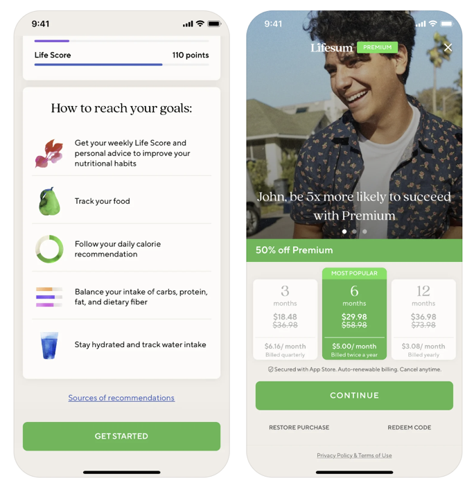
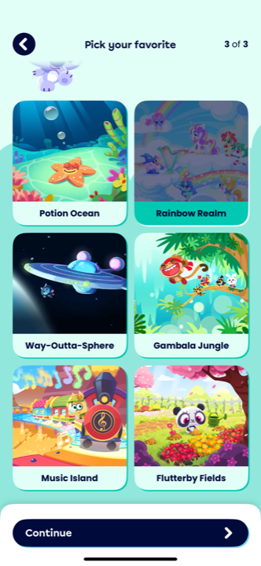
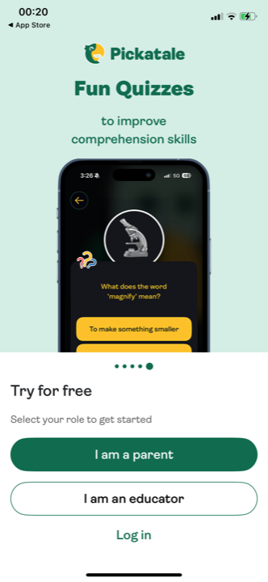
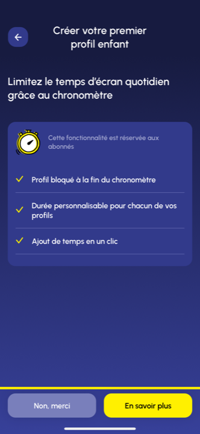
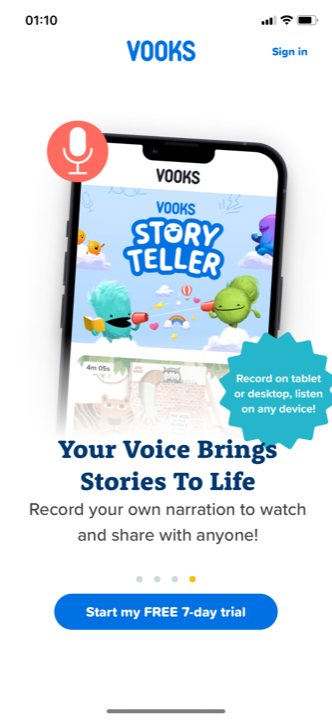
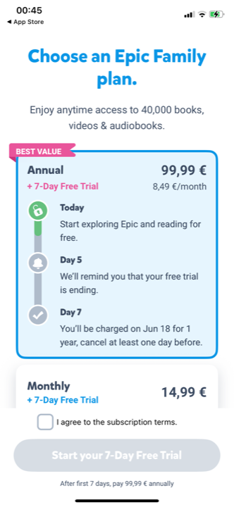
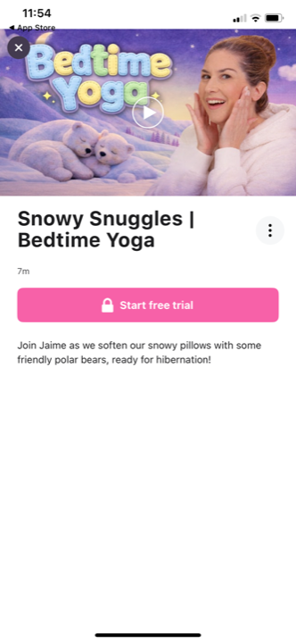
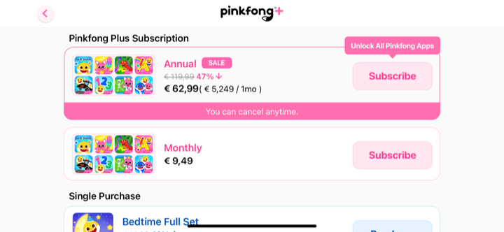

Le paywall « pète »-t-il visuellement ? Rupture de couleur et de composition à l'arrivée au paywall
Ce que les analyses existantes disent déjà
On ne refait pas. Deux docs ont déjà posé la structure du paywall et la couleur du beat de preuve. On part de là, on comble le trou : la richesse visuelle du paywall lui-même, à son arrivée.
1 · audit-benchmark-paywall.html a posé la structure et le pricing
Verdict acté : paywall en 3 écrans (valeur, choix du palier d'heures à la Storytel, modale Apple), cartes empilées, palier accessible présélectionné, réassurance en couche. Solide Ce doc a noté en passant que la structure best-in-class est plutôt sobre (façon Storytel), mais il a regardé l'articulation, pas le rendu visuel.
2 · audit-benchmark-rythme-couleur.html a tranché la couleur du beat de preuve (carrousel → autorité)
Verdict acté : teinter le fond de l'écran d'autorité d'un ton (crème → crème chaud / jaune doux) double le signal du beat, sans changer d'univers. Solide La règle générale : « le décor peut varier librement tant que l'accent voyage de bout en bout ».
La réponse
Trois verdicts. Les paires avant → paywall qui les fondent suivent, lues une par une, fond contrôlé de l'écran d'avant au paywall. Honnêteté d'abord : la rupture n'est PAS universelle, et je liste les cas où le paywall pète moins que l'écran d'avant.
1 · À l'arrivée au paywall, le FOND change-t-il de couleur ?
Solide École « rupture de fond », vue sur captures : Zero bascule d'un écran clair gris-perle à un navy/sarcelle profond ; Lifesum d'une liste sur crème à une photo lifestyle plein cadre ; Moshi d'une grille menthe à un hero orange / lever de soleil ; Pickatale d'un slide vert d'eau à un vert sapin saturé plein écran. Dans ces cas, le fond fait le pic : on quitte le clair fonctionnel pour une couleur dense, chaude ou sombre, qui dit « moment important ».
Solide École « continuité de fond » : Vooks et Epic restent en blanc de bout en bout (le paywall ne change pas de couleur, il monte en modale ou densifie le contenu) ; Bayam garde son univers navy/violet du pitch au paywall (la rupture se fait par la richesse du contenu, pas par la teinte). Observé Le facteur qui décide : les marques à fond clair fonctionnel gagnent à basculer sur une couleur dense au paywall (le contraste fait le pic) ; les marques qui ont déjà un fond riche (Bayam navy) n'ont pas besoin de changer la teinte, elles densifient le contenu.
2 · La COMPOSITION se densifie-t-elle ? (hero, titre plus gros, plein cadre)
- L'arrivée d'un hero visuel Solide : Zero pose un énorme wordmark « Zero » en filigrane derrière une feuille verte ; Lifesum une grande photo de visage souriant ; Moshi la mascotte koala sur un ciel orangé ; Bayam un mur de couvertures de livres audio en haut. L'écran d'avant n'avait que des pictos ou une liste ; le paywall ouvre sur une image forte.
- La densité monte d'un cran Solide : l'écran d'avant est souvent aéré et fonctionnel (une liste de bénéfices à coches, une grille de choix, un réglage). Le paywall empile : hero + titre de valeur + bénéfices + cartes de prix + CTA + réassurance. Il est l'écran le plus chargé de la séquence, ce qui en fait visuellement un sommet.
- Le titre grossit et devient une promesse Solide : « Proven sleep benefits for kids » (Moshi), « Trust your gut with Zero », « be 3x more likely to succeed » (Lifesum), « Tout l'univers du livre audio » (Bayam). Le titre du paywall est plus gros et plus chargé émotionnellement que les libellés des écrans d'avant.
- Observé Contre-exemple honnête : la densification n'est pas garantie. Cosmic Kids fait l'inverse : l'écran d'avant (fiche locked) a une belle photo hero, et le paywall « Choose your plan » est plus pauvre (gradient bleu nu, deux cartes, beaucoup de vide). Quand le paywall retombe sous l'écran d'avant, il rate son pic.
3 · Comment un paywall « pète » TOUT EN restant lisible et propre ?
Solide Le pattern des paywalls qui pètent sans se charger, c'est la séparation verticale en deux zones. En haut : le pic visuel (fond dense, hero, titre-promesse, couleur saturée) qui crée l'émotion et marque le sommet de rythme. En bas : la zone de décision posée sur un fond clair ou un panneau net (cartes de prix lisibles, CTA franc, réassurance). Zero le fait à la perfection : moitié haute navy avec le wordmark géant + 3 bénéfices, moitié basse avec la carte de prix blanche « For only 1,35 € per week » et le CTA vert. Lifesum aussi : photo plein cadre en haut, cartes de prix sur blanc en bas. Le pic ne mange jamais les prix.
Solide Ce qui rate quand c'est trop chargé : quand le décor saturé envahit aussi la zone de prix, la lisibilité s'effondre. Pinkfong étale ses prix sur des cartes pâles au-dessus d'un home étoilé scintillant (modale « VS ») : ça scintille, mais les prix se noient. La règle est nette : le fond dense reste dans la zone hero ; la zone de prix se pose sur du calme (blanc, panneau uni, contour franc). Le pic est en haut, la lecture du prix en bas, et les deux ne se chevauchent pas.
Les exemples, avant vs paywall
Chaque paire : l'écran juste avant le paywall (gauche) et le paywall (droite), lus en pleine résolution. La pastille dit ce qui change : fond ✕ = la couleur de fond bascule, fond ✓ = elle est tenue ; compo ✕ = la composition se densifie / un hero arrive. On commence par les deux apports de Charles.
Quand le fond bascule sur une couleur dense ou une photo plein cadre
Le paywall quitte le clair fonctionnel des écrans d'avant pour une couleur saturée ou une grande image. Le contraste fait le pic. C'est la démonstration directe de l'intuition de Charles.




Quand l'univers est déjà coloré : le pic se fait par le hero et la profusion
Bayam ne change pas de teinte (navy du pitch au paywall) mais densifie violemment : couvertures, cartes de prix bordées, CTA jaune. La rupture est réelle, elle passe par la richesse, pas par la couleur.


Quand le paywall reste neutre, ou retombe sous l'écran d'avant
L'intuition de Charles n'est PAS universelle. Une part du corpus garde un paywall en blanc neutre, ou même moins riche que l'écran d'avant. C'est la borne basse, et ce que ces cas ratent.






Ce que ça donne pour Kidsono
L'intuition de Charles est juste, mais à amortir à notre DA. Le paywall doit être un pic, oui ; mais le crème est clair et calme, on ne peut pas « basculer en navy » comme Zero sans renier la marque. On fait le pic par les leviers néo-brutalistes, pas par un fond sombre.
Comment faire péter le paywall en crème néo-brutaliste : les leviers concrets
- 1 · Le fond : bandeau ou hero jaune signature en HAUT , pas un navy. Le pic de couleur se fait avec le jaune #FFCB02 en aplat franc sur la zone hero (haut du paywall), pas en changeant tout le fond. C'est la transposition de Zero (zone hero dense en haut) à notre palette chaude : le jaune EST notre « couleur de pic », il a déjà servi de pic au claim, il revient ici en fil rouge. La zone du bas (prix) repasse sur crème ou blanc cassé pour la lisibilité.
- 2 · Le hero : mascotte ou couvertures, en grand. Comme Moshi (koala hero) et Bayam (mur de couvertures), le paywall s'ouvre sur un visuel fort que les écrans neutres d'avant n'avaient pas : la mascotte Kidsono en pose engageante, OU un mur de couvertures d'éditeurs (qui sert double : hero + preuve de richesse du catalogue). Le titre grossit et devient promesse (voix parent).
- 3 · L'autorité éditeurs / Éducation nationale en GRAND. C'est notre munition forte, réservée à ce moment (acté). Au paywall, les logos éditeurs condensés + le tampon Éducation nationale deviennent un élément de richesse ET de réassurance au moment de décider. C'est notre équivalent du « 90k 5-star reviews » de Moshi, mais en plus crédible (caution institutionnelle, pas masse).
- 4 · Aplats francs cernés, pas dégradé mou. La DA néo-brutaliste interdit le dégradé (le piège « dégradé mou » que Charles veut éviter). Le pic se fait par aplats de couleur pleins, cernés de noir épais, ombres décalées : un bandeau jaune cerné en hero, des cartes de prix à contour noir épais et ombre portée, un CTA jaune cerné. La richesse vient des contrastes francs, pas de la profondeur d'un dégradé.
- 5 · La hiérarchie qui marche (la règle d'or de Zero) : pic en haut, prix au calme en bas. Le hero jaune + mascotte + autorité occupent la moitié haute ; les 3 cartes de paliers d'heures (déjà actées) se posent sur un fond clair en bas, contours nets, palier accessible présélectionné en jaune. Le pic ne mange JAMAIS la grille de prix (l'erreur Pinkfong).
- À éviter : 1/ le dégradé (interdit par la DA, et « mou ») ; 2/ mettre la couleur saturée dans la zone de prix (Pinkfong : prix illisibles) ; 3/ vider la compo en croyant faire « propre » (Cosmic Kids : paywall plus pauvre que l'écran d'avant, le pic retombe) ; 4/ un navy / bleu froid qui ferait « autre app » (le crème/jaune est l'identité, on ne change pas de monde, on intensifie le jaune).
L'avis
Force : l'intuition de Charles est vérifiée sur captures, pas projetée. Le pattern « pic en haut (fond dense + hero + titre-promesse), prix au calme en bas » est convergent sur des apps indépendantes et de registres différents (Zero, Lifesum côté wellness ; Moshi, Pickatale, Bayam côté enfant). Surtout, on a une transposition crédible à la DA : Bayam prouve qu'on peut faire péter un paywall sans dégradé, par aplats francs + CTA jaune + profusion de couvertures, ce qui est exactement notre langage néo-brutaliste. Et le jaune comme « couleur de pic » est cohérent avec le rôle déjà acté du jaune (fil rouge, pic du claim). Solide sur le pattern, Observé sur la transposition.
Risques : 1/ Estim. deux pics rapprochés (claim ET paywall en jaune) peut aplatir la courbe si les deux se ressemblent trop ; le paywall doit péter différemment du claim (hero couvertures + autorité, pas la même mascotte au même endroit), sinon on a deux fois le même sommet. 2/ Le crème est clair : le contraste de pic est mécaniquement moins fort qu'un navy (Zero) ou une photo (Lifesum) ; le jaune en aplat franc + le noir des contours devront porter le pic seuls, ce qui ne se juge qu'en maquette. 3/ La frontière « pète » / « surchargé » est une affaire d'exécution fine (l'erreur Pinkfong est facile à reproduire avec une DA déjà très graphique). 4/ Aucune app du corpus n'a la DA crème/jaune néo-brutaliste : la reco est directionnelle, à valider en rendu, pas à décréter.
Position vs standard : au standard sur le principe (le paywall best-in-class fait un pic visuel : fond dense + hero + titre-promesse, prix séparés au calme). Contrarian assumé sur le moyen : là où le marché fait le pic par un fond sombre ou une photo, nous le ferons par un aplat jaune franc cerné + mascotte/couvertures + autorité institutionnelle, sans dégradé ni bascule de famille. On prend le mécanisme du marché (la courbe à deux pics) en l'amortissant à une DA claire et graphique, là où la plupart des apps s'appuient sur l'obscurcissement pour créer le contraste.
Document de travail, mission conseil Kidsono. 17 captures lues en pleine résolution, par paires écran-avant → paywall : Zero (planche), Lifesum (planche, crop x3 pour la résolution), Moshi 06/07, Pickatale 06/09, Bayam 06/07, Vooks 05/09, Epic 08/09, Cosmic Kids 08/11, Pinkfong 12. Complète audit-benchmark-paywall.html (structure + pricing, non répété) et audit-benchmark-rythme-couleur.html (couleur du beat de preuve carrousel → autorité, prolongé ici au sommet de la courbe). Seul l'angle richesse visuelle / rupture à l'arrivée au paywall est neuf. Niveaux : Solide vu sur captures · Observé pattern récurrent du panel · Estim. projection directionnelle. Famille des perdants non sollicitée. 2026-06-16.